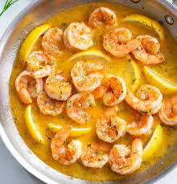

Butter Shrimp

This is a recipe for a very butter and creamy shrimp
This buttery shrimp is going to be the best ever shrimp you ever had
Here are the ingredients you will need:
- 1 pound Argentinian shrimp. It needs to be Argentinian or it will not work
- 1/2 cup Grass-Fed Irish Butter (unsalted)
Now, the steps:
- If the shrimp are frozen, thaw them first
- To thaw, run lukewarm water through a colander for 5 to 10 minutes or until soft
- Heat up the pan
- Butter the pan. Make sure to spread it and cover the pan
- Cook shrimp 2 minutes each side
- Brush butter on top of shrimp
- Serve and enjoy